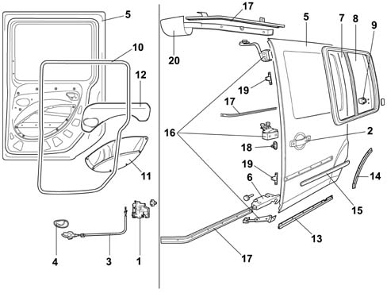
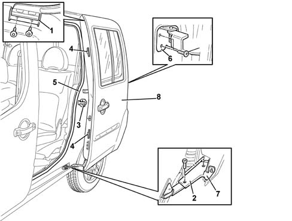

7020C SLIDING SIDE DOOR
- Path
- Descriptions > 70 FITTINGS > 7020 LOAD COMPARTMENT DOORS > 7020C SLIDING SIDE DOOR
- Kind
- system description
- Applies to
- all engines; all production periods
- Interactive page
- https://sloeber94.github.io/elrnDB-fDbl/en/#/2582353
Applies to: all engines; all production periods
The side door is manufactured using conventional pressing processes and includes a sliding opening and closure system with three anchorage points. Passive safety is assured by side impact bars.
The door is anchored and locked shut at the rear by means of a conventional central lock.
An electrical contact device located at the lower front of the door ensures a contact for the door open indicator and door safety lock when the door is closed.
The glazed door window includes two panes that slide over one another and are anchored in the middle to close.

1, Lock
2, Outer handle
3, Interior door opening link
4, Interior handle and safey device
5, Door frame
6, Door open limiter and lock
7, Fixed window glass
8, Sliding window glass
9, Device for locking sliding glass open
10, Door compartment seal
11, Interior door panel
12, Rear door pouch
13, Lower seal
14, Rear seal
15, Exterior sliding door moulding
16, Anchorage devices
17, Sliding mount guides
18, Safety pin
19, Sliding door locating pins
20, Upper guide cover
ADJUSTMENT
The right or left sliding side door (8) incorporates slots in anchorage points (1), (2), (6) and (7) for adjusting gaps and seal loads.
At the top, upper device (1) and lower device (2) allow load on door compartment seal (5) to be increased or decreased. Before adjusting these devices, loosen locating pins (4) at the front.
To increase the load on seal (5) at the rear of the door, adjust lock striker (3) secured to the pillar.
Lower slide (7) allows vertical adjustment of the front part. Central slide (6) allows vertical adjustment of the rear part.

1, Upper anchorage device
2, Lower anchorage device
3, Lock striker
4, Locating pins
5, Seal
6, Rear anchorage device
7, Lower anchorage device on the door
8, Sliding side door